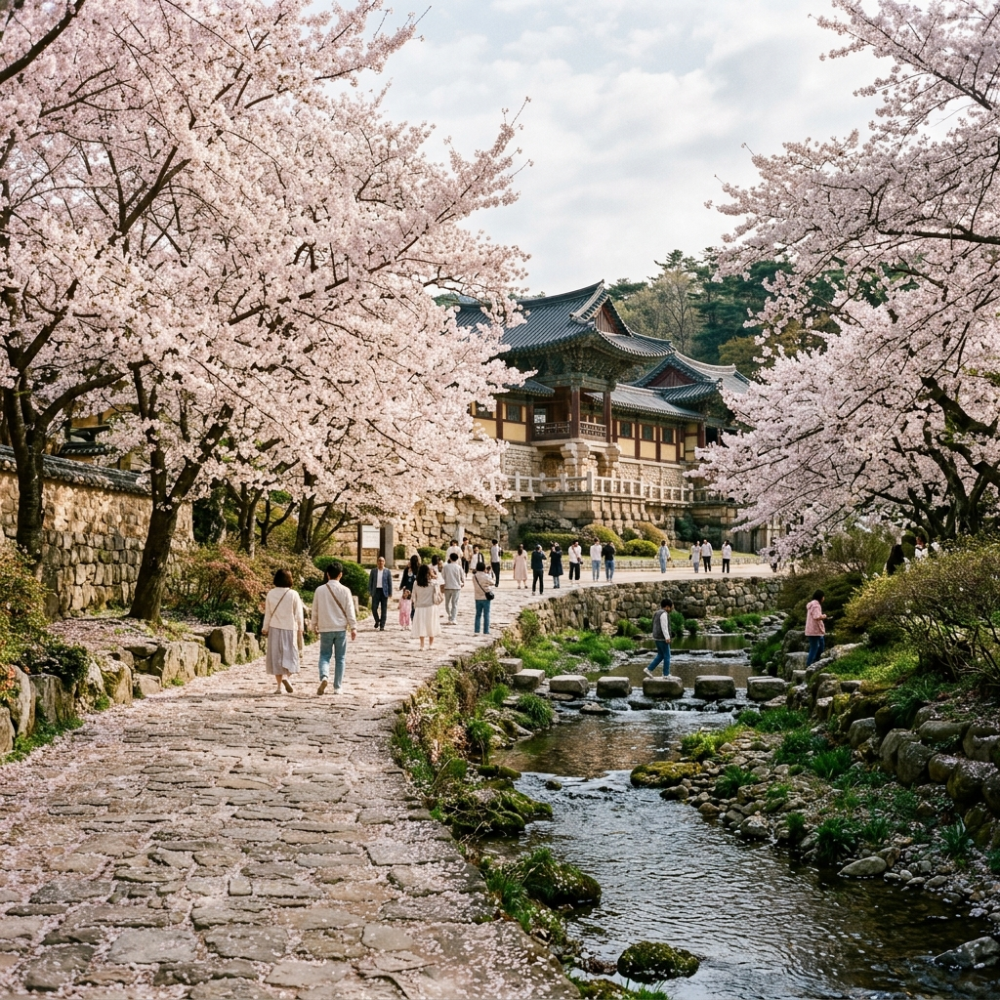

단풍은 왜 특정 시기에 물드는 걸까요? 이를 이해하면 절정 시기를 예측하는 데 큰 도움이 됩니다. 단풍은 나무 잎의 엽록소가 분해되면서 나타나는 자연 현상으로, 크게 기온·일조량·강수량 세 가지 요인에 영향을 받습니다.
가장 결정적인 요인은 야간 기온입니다. 최저기온이 5°C 이하로 내려가기 시작하면 단풍이 들기 시작하고, 이 상태가 며칠 이상 지속되면 절정에 가까워집니다. 낮과 밤의 기온차가 클수록 단풍색이 더욱 선명하고 아름답게 나타납니다.
일조량도 중요합니다. 가을철 맑은 날이 많을수록 안토시아닌 합성이 촉진되어 빨간색 단풍이 선명해집니다. 반면 흐린 날이 길게 이어지면 단풍색이 칙칙해지거나 일찍 낙엽이 지는 경우가 있습니다.
강수량은 여름부터의 누적 수분 상태를 결정합니다. 여름에 극심한 가뭄이 있었다면 나무 자체가 스트레스를 받아 단풍 색이 예쁘게 나오지 않을 수 있습니다. 반면 적당한 수분 공급을 받은 나무는 가을에 더 풍성하고 선명한 단풍을 만들어냅니다.
기후변화로 인해 최근 단풍 절정 시기가 전반적으로 늦어지는 경향이 있습니다. 과거 평균 시기보다 1~2주 정도 늦게 절정에 달하는 경우가 많아지고 있으니, 일정을 잡을 때 이 점을 감안하시는 것이 좋습니다.
한국의 단풍은 북쪽·고지대에서 시작해 남쪽·저지대로 내려옵니다. 일반적인 단풍 절정 시기를 지역별로 정리하면 다음과 같습니다.
10월 초~중순 (강원도 북부·고지대): 설악산 대청봉 기준으로 10월 초에 가장 먼저 단풍이 들기 시작합니다. 오대산·태백산·금강산권도 10월 중순 전후에 절정을 맞이합니다. 이 시기 강원도 북부를 찾는다면 빨간 단풍과 눈이 덮인 봉우리가 함께 보이는 장관을 경험할 수 있습니다.
10월 중순~하순 (경기·충청·경상 북부): 수도권과 가까운 명지산·유명산·용문산(양평)의 단풍이 이 시기에 절정을 이룹니다. 소백산·속리산·계룡산도 10월 중하순이 가장 아름답습니다. 이 기간이 단풍 여행객이 가장 집중되는 성수기입니다.
10월 말~11월 초 (남부·제주): 지리산의 단풍은 10월 말~11월 초에 절정에 달합니다. 내장산(전북)은 10월 하순~11월 초의 단풍으로 유명하며, 제주도 한라산은 11월 초중순에 단풍이 절정을 맞이합니다.
이는 평년 기준 예측이며, 해당 연도의 기상 상황에 따라 1~2주 이상 빠르거나 늦게 절정이 올 수 있습니다. 매년 가을 국립산림원에서 발표하는 단풍 예측 정보를 참고하세요.
매년 가을 국립산림과학원(NIFOS)은 전국 단풍 예측 지도를 발표합니다. 이 지도는 기상청의 기온 예보 데이터와 과거 단풍 관측 데이터를 결합해 지역별 절정 시기를 예측한 것으로, 단풍 여행 계획을 세우는 데 매우 유용합니다.
단풍지도는 보통 9월 중하순에 처음 발표되며, 이후 주 단위로 업데이트됩니다. 지도에는 단풍 시작일(20% 착색 기준)과 절정일(80% 착색 기준)이 표시되며, 색상으로 구분된 지역별 진행 상황을 한눈에 확인할 수 있습니다.
국립산림과학원 공식 홈페이지 또는 '국립공원 단풍' 검색을 통해 매년 갱신되는 예측 지도를 확인하실 수 있습니다. 기상청 홈페이지에서도 단풍 관련 계절 전망 자료를 제공합니다.
단풍지도 외에도 국립공원공단에서는 주요 국립공원의 단풍 현황을 사진과 함께 실시간으로 업데이트합니다. 설악산·지리산·내장산 등 주요 공원 홈페이지에서 '탐방 정보' 또는 '단풍 현황' 게시판을 확인하면 됩니다.
SNS(인스타그램) 해시태그 검색도 실시간 단풍 상황 파악에 효과적입니다. #설악산단풍 #내장산단풍 같은 해시태그를 검색하면 현재 단풍 상태를 담은 사진을 바로 확인할 수 있습니다. 현지인의 생생한 후기가 가장 빠른 실시간 정보가 됩니다.
단풍 여행지를 미리 점찍어 두고 싶은 분들을 위해 대표 명소를 정리해 드립니다. 절정 시기와 함께 핵심 특징을 확인해 두세요.
설악산 (강원 속초·인제): 국내 단풍 명소의 대명사. 울산바위·천불동계곡·비룡폭포 코스에서 다채로운 단풍을 즐길 수 있습니다. 케이블카를 타고 권금성에서 내려다보는 단풍 파노라마는 숨막히는 절경입니다. 절정 시기 10월 초~중순.
내장산 (전북 정읍): 단풍으로 덮인 터널길이 유명한 호남 단풍의 성지. 내장사를 중심으로 단풍 숲길이 이어지며, 단풍 절정기에는 전국에서 수십만 명이 찾습니다. 절정 시기 10월 말~11월 초.
지리산 (경남·전남·전북): 피아골 계곡의 붉은 단풍이 압도적입니다. 단풍 시즌 피아골 입구에서 직전 마을까지 약 8km 단풍 트레킹이 일품입니다. 절정 시기 10월 말~11월 초.
한라산 (제주): 한반도에서 가장 남쪽에 위치해 단풍 절정 시기가 가장 늦습니다. 어리목·영실 코스에서 한라산 단풍을 볼 수 있으며, 11월에도 단풍 여행이 가능합니다. 절정 시기 11월 초~중순.
오대산 월정사 (강원 평창): 전나무 숲길과 단풍이 어우러지는 신비로운 풍경이 특징. 월정사에서 상원사까지 이어지는 9km 선재길을 걸으며 단풍과 계곡 물소리를 동시에 즐길 수 있습니다. 절정 시기 10월 초~중순.
단풍 여행에서 '타이밍'이 전부라고 해도 과언이 아닙니다. 절정을 1~2주 이상 빗나가면 이미 낙엽이 지거나 아직 색이 안 든 경우가 많습니다. 성공적인 단풍 여행을 위해 미리 준비하는 전략을 알려드립니다.
국립산림과학원의 단풍 예측 지도가 발표되는 9월 중하순에 목표 지역의 예측 절정일을 확인하고, 그 날짜 기준 전후 3~5일 내에 숙박과 교통을 예약하세요. 설악산·내장산·지리산 같은 인기 명소는 절정 주말에 숙박이 빠르게 마감됩니다.
숙박 예약 시기는 단풍 예측 정보가 나오는 9월이 이상적이지만, 인기 펜션이나 숙소는 그 전에 이미 예약이 차는 경우도 있습니다. 가고 싶은 지역을 미리 정해 두고 8월 말~9월 초부터 예약 현황을 체크하세요.
평일 방문을 적극 고려해 보세요. 단풍 절정기 주말의 인파는 상상을 초월합니다. 내장산·설악산 인기 코스는 주말에 수십만 명이 몰려 이동조차 어려운 경우가 있습니다. 평일이라면 훨씬 여유롭게 단풍을 즐길 수 있습니다.
벚꽃 시즌도 단풍과 마찬가지로 미리 준비해야 제대로 즐길 수 있습니다. 봄 벚꽃은 보통 3월 말~4월 중순 사이에 전국을 물들이며, 지역별 개화 시기가 다릅니다.
벚꽃 역시 기온에 민감합니다. 겨울 누적 저온량이 충분해야 봄에 개화가 시작되는데, 따뜻한 겨울이 지속되면 개화가 늦어질 수 있습니다. 최근 기후변화로 인해 벚꽃 개화 시기도 조금씩 변하고 있습니다.
지역별 평균 개화 시기: 제주 서귀포가 3월 하순으로 가장 빠르고, 남해안(부산·경남)이 3월 말~4월 초, 서울·경기는 4월 초~중순, 강원 북부는 4월 중하순에 개화합니다.
기상청은 매년 2월~3월에 벚꽃 개화 예측 지도를 발표합니다. 이를 참고해 방문 지역과 일정을 맞추면 절정 벚꽃을 경험할 가능성이 높아집니다.
벚꽃 명소 중 숙박 예약이 빠른 곳은 경주·진해·여의도 등입니다. 특히 진해군항제(경남 창원)는 전국 최대 벚꽃 축제로, 기간 중 숙박은 몇 달 전부터 예약이 마감됩니다. 가고 싶은 벚꽃 명소가 있다면 전년도 11월~12월부터 예약을 준비하세요.

단풍·벚꽃 절정 시즌은 전국적으로 여행 수요가 폭발하는 시기입니다. KTX와 고속버스 좌석도 빠르게 마감되므로, 교통 예매 역시 서두르는 것이 현명합니다.
KTX는 코레일 앱(코레일톡)에서 1개월 전 0시부터 예매가 가능합니다. 단풍 절정 주말(예: 10월 3~4주차 주말) 기차표는 예매 오픈과 동시에 인기 시간대가 매진될 수 있습니다. 알림 설정을 통해 예매 가능 날짜를 놓치지 마세요.
고속버스와 시외버스는 버스통합예매 앱(코버스) 또는 각 터미널 홈페이지에서 예매할 수 있습니다. 설악산·내장산 방면 노선은 절정 주간에 좌석이 빠르게 소진됩니다.
자가용 이용 시에는 네비게이션 앱의 도착 예정 시간을 성수기 기준으로 보수적으로 계산해야 합니다. 단풍 절정 주말에는 목적지 인근 도로가 수킬로미터씩 정체되는 경우가 흔합니다.
인기 단풍 명소의 주차장은 오전 6~7시에도 만차가 될 수 있습니다. 아예 전날 인근 숙박을 잡고 새벽에 출발하거나, 주요 명소까지 운행하는 셔틀버스를 이용하는 방법을 고려해 보세요.
매년 가을 단풍 여행을 준비하는 분들이 이용할 수 있는 실시간 정보 채널을 정리합니다. 각 채널의 특성에 맞게 활용하면 최신 정보를 빠르게 얻을 수 있습니다.
국립산림과학원 (nifos.go.kr): 매년 9월~11월 전국 단풍 예측 지도와 주간 단풍 현황을 발표합니다. 가장 공식적이고 신뢰도 높은 단풍 정보 출처입니다.
국립공원공단 홈페이지 및 앱: 설악산·지리산·내장산·한라산 등 주요 국립공원별 탐방 정보와 단풍 현황 사진을 제공합니다. 국립공원 앱에서 탐방 예약도 함께 할 수 있습니다.
기상청 (weather.go.kr): 가을철 계절 전망과 지역별 기온 예보를 통해 단풍 절정 시기를 간접적으로 유추할 수 있습니다.
SNS 해시태그: 인스타그램에서 #설악산단풍 #지리산단풍 #내장산단풍 등을 검색하면 현재 단풍 상태를 담은 실시간 사진을 확인할 수 있습니다. 공식 정보와 함께 활용하면 더욱 정확한 타이밍을 잡을 수 있습니다.
아름다운 단풍과 벚꽃을 카메라에 담으려면 몇 가지 촬영 팁이 도움이 됩니다. 단풍 사진은 역광을 적극 활용하세요. 해가 반대편에 있을 때 단풍 잎을 향해 촬영하면 빛이 투과되면서 잎이 더욱 선명하고 풍성하게 표현됩니다.
물가가 있는 명소에서는 반영(반사) 효과를 적극 활용하세요. 고요한 연못이나 계곡에 비치는 단풍의 반영은 사진을 더욱 드라마틱하게 만들어 줍니다. 바람이 없는 이른 아침에 물가를 찾으면 더욱 선명한 반영을 담을 수 있습니다.
벚꽃 사진에서는 하늘을 많이 담는 구도가 효과적입니다. 아래에서 위를 향해 벚꽃과 하늘을 같이 담으면 꽃잎이 빛을 받아 환상적인 연분홍색으로 표현됩니다. 흐린 날 벚꽃은 오히려 하얗게 뭉개지지 않고 부드럽게 표현됩니다.
스마트폰 카메라로도 충분히 좋은 사진을 찍을 수 있습니다. HDR 기능을 활성화하면 어두운 그늘과 밝은 빛이 공존하는 단풍 숲에서 더 균형 잡힌 사진을 얻을 수 있습니다. 포트레이트 모드(인물 모드)로 가까운 단풍 잎을 촬영하면 배경이 흐릿하게 처리되어 감성적인 사진이 완성됩니다.